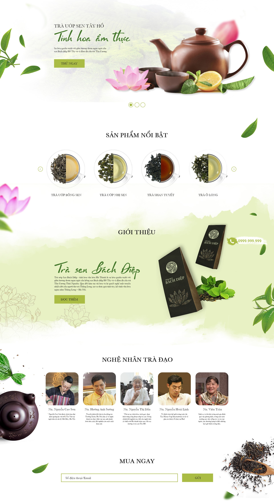

Sản phẩm nổi bật
Trà sen Bách Diệp là loại trà sen cao cấp, được làm từ những búp sen tươi và cánh sen Bách Diệp. Trà có hương thơm dịu nhẹ, vị ngọt thanh, rất phù hợp để thưởng thức trong những ngày hè oi bức.
Giới thiệu
Trà Vòi Sen Tây Hồ là một thương hiệu trà sen nổi tiếng tại Hà Nội. Chúng tôi chuyên cung cấp các loại trà sen cao cấp, được sản xuất từ những nguyên liệu tươi ngon, chất lượng.
Trà sen của chúng tôi được nhiều khách hàng yêu thích bởi hương thơm dịu nhẹ, vị ngọt thanh, mang đậm hương vị của Hà Nội.
Liên hệ
Địa chỉ: 123 Xã Đàn, Đống Đa, Hà Nội
Điện thoại: 0987654321
Email: travoisentayho@gmail.com